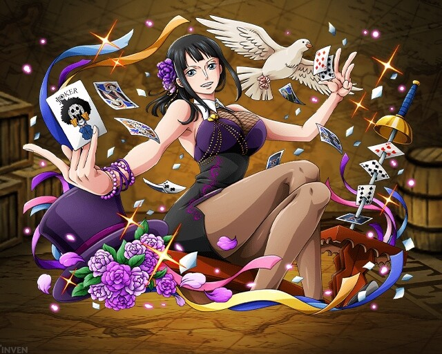

원피스의 등장인물. 밀짚모자 일당의 고고학자이자 몽키 D. 루피의 일곱번째 동료이다.
고고학의 성지 오하라에서 불과 8살이라는 어린 나이에 고고학 박사 자격을 얻었고 포네그리프 해독이 가능한 유일한
인물이라는 이유로 바로 그 해에 군함 여섯 척을 침몰시켰다는 누명을 쓰고 현상금 7,900만 베리의 수배범이 되었다.
세계정부가 철저하게 은폐하고 있는 공백의 100년의 진상을 규명하기 위해서 리오 포네그리프를 찾고 있으며 세간에는
고대병기 부활을 획책하는 '오하라의 악마'라고 불린다.[46][47] 반면 세계정부를 적대시하는 혁명군으로부터는
'혁명의 등불'이라고 칭송받는다.
버스터 콜로 고향이 멸망한 이후 밀짚모자 일당을 만나기 전까지 정부의 끈질긴 추격을 피해 20년 동안 어두운 뒷세계를
전전했다. 그 경력 때문인지 해적들이 펼치는 뒷세계의 현실을 어렴풋이나마 잘 알고있고, 많은 해적들의 이름도 잘 알고있는
인물. 원피스 알라바스타 편에서는 전복을 꾀하는 바로크 워크스 부사장이자 'Mr.0' 크로커다일의 파트너인 '미스 올 선데이'로
등장하며 중간 보스급으로서 당연히 왕녀 비비와 밀짚모자 일당과 적대적인 관계였지만 바로크 워크스가 붕괴한 뒤 생명의 은인인
루피를 따라서 밀짚모자 일당에 자진해서 들어왔다.[48] 일당 중 루피에게 영입 요청을 받기 전에 먼저 가입을 요청한 유일한 케이스.
이후 세계정부의 위협에서 동료들을 지키기 위해 워터 세븐 편에서 임의로 탈퇴를 선언했었지만 에니에스 로비에서의 사건을 거쳐
다시 화려하게 밀짚모자 해적단의 동료로 복귀했다